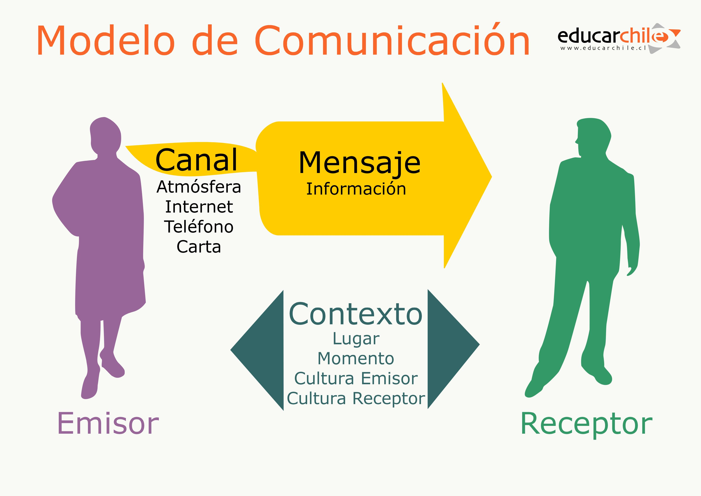

Un modelo para las comunicaciones
En cualquier comunicación se pueden distinguir los 6 componentes que se indican a continuación:
El fuente es el origen del cual procede la información. Normalmente es una persona.
El emisor es el elemento que se encarga de transformar la información proporcionada por la fuente para adaptarla al
canal o medio por el cual se transmitirá.
El canal o medio es el elemento por el cual se transmite la información. Este puede ser algún tipo de cable o, en el
caso de comunicaciones inalámbricas, el aire.
El ruido es cualquier perturbación sobre el medio que afecte a la información. Esto hace que la información llegue
con modificaciones.
El receptor es el elemento que se encarga de extraer la información del canal y transformarla para que pueda ser
interpretada correctamente por el destino.
El destino es el lugar o entidad que consume la información. Normalmente es una persona.
